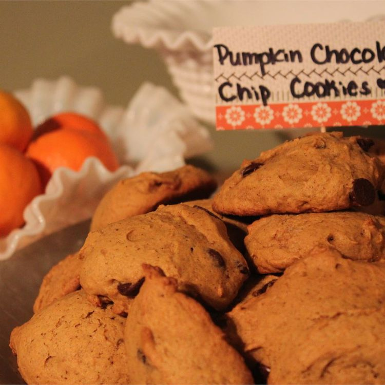

Pumpkin Chocolate Chip Cookies

Description
This recipes is to teach you how to make delicious pumpkin chocolate chip cookies perfect for the fall season. They have a muffin top texture with a warm and cozy feel that will make you feel right at home.
Ingredients
- 1/2 cup oil
- 1 cup white sugar
- 1 large egg
- 2 teaspoons vanilla extract
- 1 cup canned pumpkin
- 1 teaspoon baking soda
- 1 teaspoon milk
- 2 cups all-purpose flour
- 2 teaspoons baking powder
- 2 teaspoons pumpkin pie spice(can sub with cinnamon)
- 1/2 teaspoon salt
- 2 cups milk chocolate chips
- 1 tablespoon vanilla extract
Steps
- Preheat the oven to 350 degrees. Grease a baking tray or line it with parchment paper.
- Mix together the pumpkin, sugar, oil, and egg into a bowl. Dissolve the baking soda into milk and stir it in.
- Add in your flour, baking powder, pumpkin pie spice, salt, and vanilla. Mix until everything is well incorporated.
- Add in the chocolate chips and stir until just combined.
- Drop by spoonful on the prepared cookie sheet and bake in the preheated oven until lightly brown and firm, approximately 12 minutes.